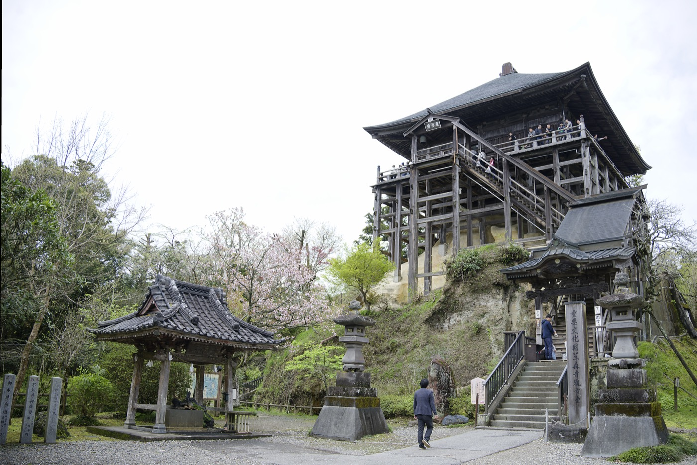
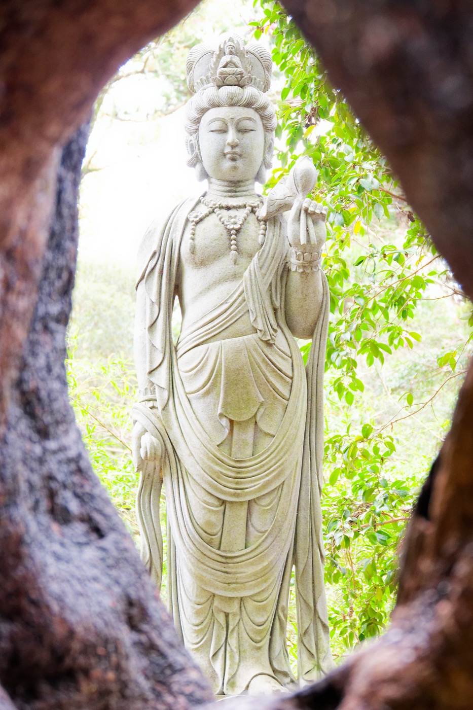
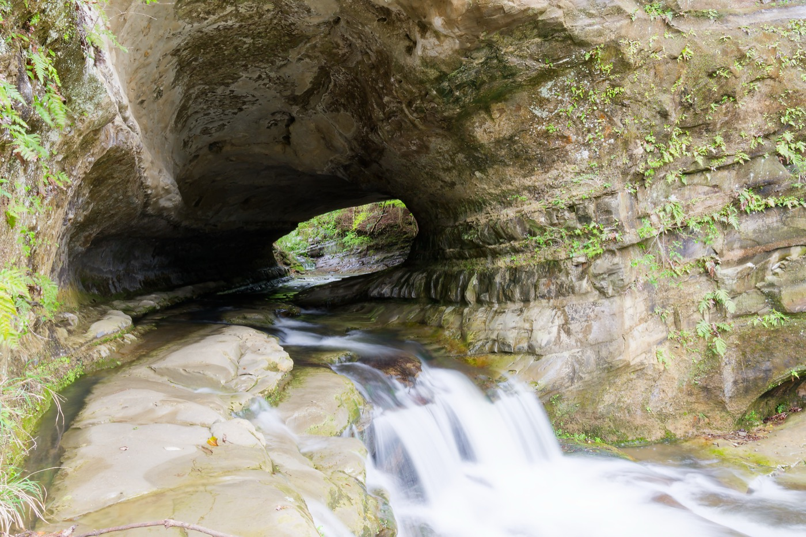
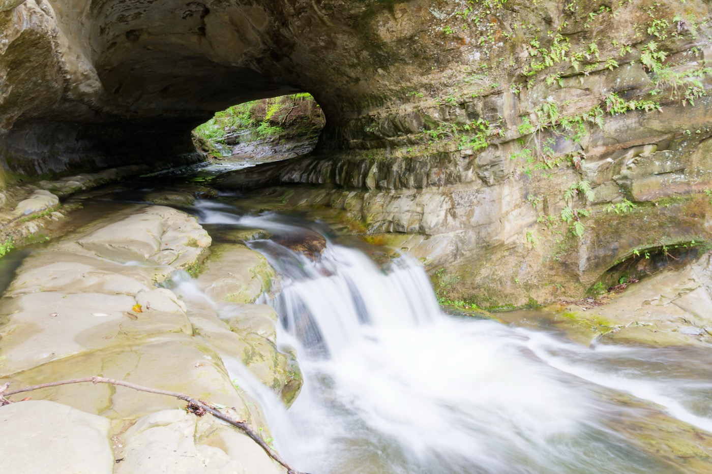
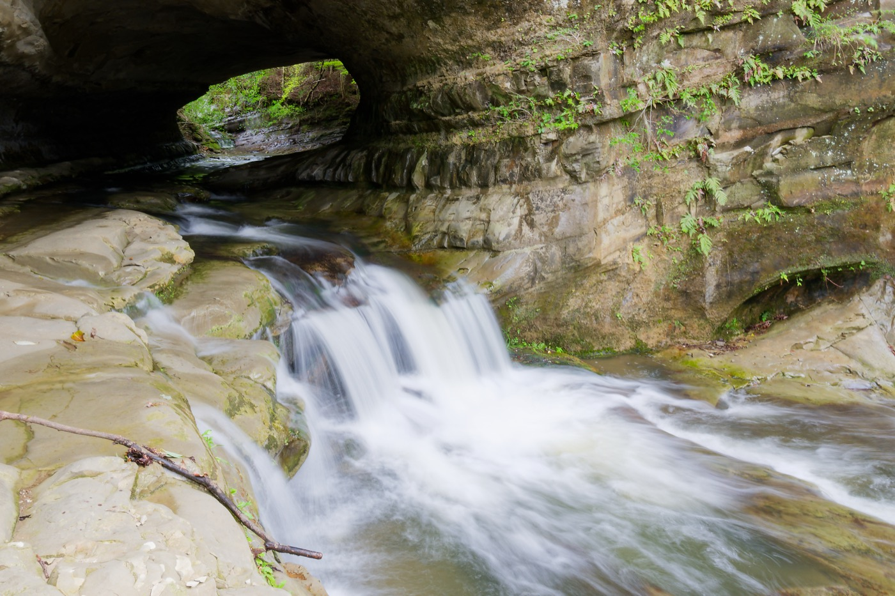

地元・千葉をXSR900で走ってきた。関東民にとって房総半島は「ちょっと走りに行く」場所として手頃な存在だが、改めてじっくり走ってみると発見がある。

房総の道の特徴
房総半島の内陸部は比較的交通量が少なく、緑の中を抜ける快走路が多い。山岳地帯のような標高変化はないが、その分疲れにくく、ペースを保ってずっと走っていられる。一本道でのんびり走るのに向いている。


XSR900 走行インプレ
SR400から乗り換えてしばらく経つが、XSR900はSRとは別物だ。3気筒の排気音はパルシングが強く、それでいてスムーズに回る。ハンドリングは軽快で、峠でも街でも意のままに動く感覚がある。


ただし振動はSRよりずっと少ない。SRの「ドコドコ」という鼓動感が好きだった自分には、最初は少し物足りなかったが、慣れると快適さのほうが勝ってくる。
地元を走ることを「見慣れた道」と思っていたが、実際に走り出すと新たな発見がある。知っている道でも、バイクが変わると感触が違う。そういう楽しみ方もある。